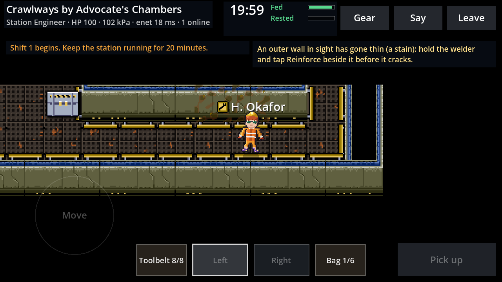
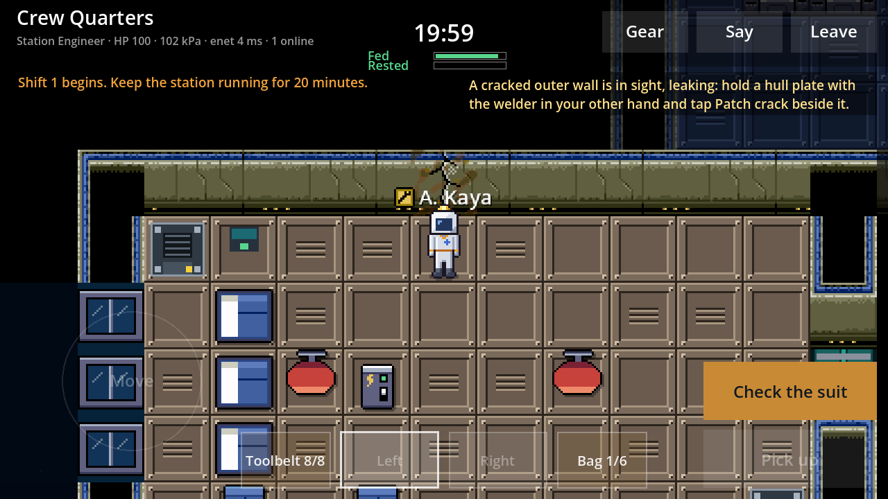
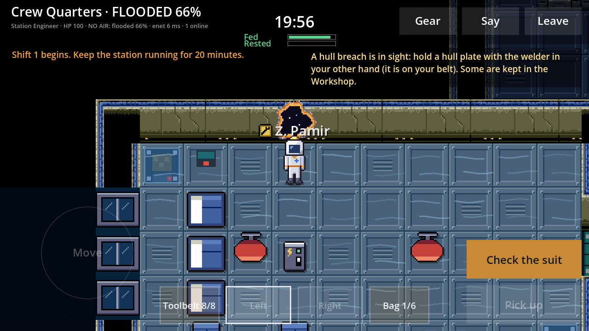
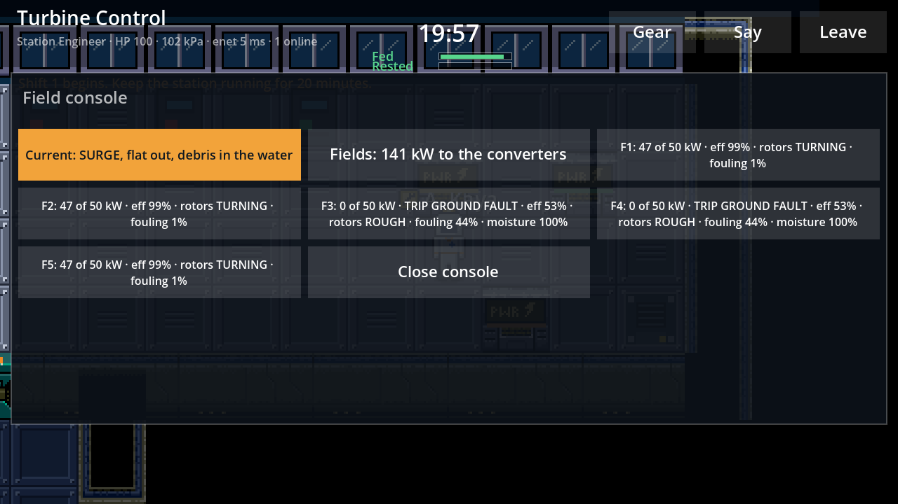

Olaylar
Her vardiya 2 olay ve vardiyadaki her 3 kişi için bir olay daha getirir. İstasyon bazılarını telsizden duyurur; vardiya sonu özeti her birinin ne kadar sürede çözüldüğünü gösterir.
İstasyonda yakıt yok: gücü yalnızca güneştendir. Ters giden şey yıpranmadır: gövdede ve enerji santralinde.
Gövde yıpranması
Toz ve sıcaklık, bütün vardiya boyunca dış duvarları yer. Bir duvar önce yıpranır (bir leke), sonra çatlar (küçük bir sızıntı) ve kimsenin onarmadığı bir çatlak uzaya açılır.
 Yıpranmış
Yıpranmış Çatlak
Çatlak Delik
Delik
Kaplama aşınması
Toz ve ısı bir dış duvarı ve yanındakileri aşındırır: oradaki kaplama incelir (duvarda bir leke), sonra çatlar ve biraz hava sızdırır ve onaracak kimse yoksa uzaya açılır, oda havasını birkaç saniyede kaybeder.
Çözüm: Dış duvarlara bak (ya da bir kalınlık ölçer taşı). Bir mühendis aşınmış bir duvarı yalnızca kaynak makinesiyle güçlendirir ve çatlak olanı bir gövde plakası ve kaynak makinesiyle yamalar. Bir delik aynı şekilde yamalanır; EVA giysisinin deposundaki bir hava tüpü onları içeride nefes alır tutar. Kapılar mühürlüyse bir levye birini zorla açar (Ambar Görevlisi bunu en hızlı yapar). Delik yamalandığında odanın havalandırmaları onu yeniden doldurur.
Millrace'te: Dış duvarlara bak (ya da bir kalınlık ölçer taşı). Bir mühendis aşınmış bir duvarı yalnızca kaynak makinesiyle güçlendirir ve çatlak olanı bir gövde plakası ve kaynak makinesiyle yamalar. Delik de aynı şekilde yamanır; deposunda tüp olan bir dalış giysisi, tamamen dolu bir odada onların nefes almasını sağlar. Kapılar mühürlüyse bir levye birini zorla açar (Ambar Görevlisi bunu en hızlı yapar). Delik yamandıktan sonra odayı Tahliye konumuna al.
Aşınmış kaplama çöktü
Kimsenin onarmadığı çatlak bir dış duvar uzaya açıldı: oda birkaç saniyede havasını kaybeder ve basınç kilidi kapılarını mühürler.
Çözüm: Öbür elde bir kaynak makinesiyle bir gövde plakası deliği yamalar; bir EVA giysisinin hava tüpü onarıcıyı nefes alır tutar.
Millrace'te: Deliği, diğer elinde kaynak makinesi tutan bir gövde plakası kapatır; bir dalış giysisindeki tüp, onarımcıyı dolu odada nefes alır tutar.



Elektrik arızası
Elektrik arızası
Bir odanın elektrik panosunun yakınındaki bir kablo bozulur: oda kesilir ve kararır, kapıları, havalandırmaları ve konsolları çalışmaz.
Çözüm: Boşluğu odanın panosunun yakınındaki kablo hattında bul (bir arıza her zaman kablonun açıkta durduğu yerdedir: bir servis geçidinde ya da kaldırılmış bir zemin karosunun altında) ve üstüne bir kablo makarasıyla kablo çek.
Radyasyon kuşağı
Normal uzunlukta bir vardiya, ilk 4 dakikadan sonra rastgele bir anda en çok bir kez radyasyon kuşağından geçer. Devam oyuyla eklenen süre bir tane daha getirebilir, ama öncekinden sonraki 8 dakika içinde asla.
Telsiz 40 saniye önceden uyarır: kapıları herkese açık olan ve turuncu yanıp sönen servis geçitlerine gir. Kuşak 60 ila 90 saniye sürer. Barınmayan herkes her 3.3 sn'de 5 can kaybeder; tüneller ve EVA kapsülleri güvenlidir, odalar, salon ve kafes kiriş değil. Süresince birkaç gövde duvarı yıpranır. Kuşaktan sonra telsiz bunu söyler ve kapılar 120 saniye sonra erişimlerine döner.

Denizin altında: Millrace İstasyonu
Su altı istasyonlarında denizin, vardiyayı kaplama aşınması ve elektrik arızasıyla paylaşan üç kendi olayı vardır. Hiçbiri telsizden ya da ekrandan duyurulmaz: atmos konsolu, keşif panosu, türbin konsolları ve gördüklerin onları öğrenme yollarıdır. Bir duvar ne kadar derindeyse deniz ondan o kadar sert zorlar: Millrace'te Omurga en derin güvertedir (18 metre) ve her yukarıdaki güverte 3 metre daha sığdır, Taç 12 metrede. Pompalar için Nasıl oynanır sayfasına bak.
Gövde sızıntısı
Su istasyonunun en derin yerindeki iki ya da üç dış duvar çatlar ve sızar: deniz orada yavaş yavaş girer, duvar derinleştikçe daha sert (30 m'deki bir duvar 15 m'dekinin iki katı alır) ve o odaların suyu yükselir. Hiçbir şey duyurulmaz: atmosfer konsolu her odanın suyunu ve çatlak duvarlarını listeler, inceleme panosu onları odalara göre sayar ve kalınlık ölçer onları duvar duvar gösterir.
Çözüm: Bir mühendis her çatlak duvarı bir gövde plakası ve kaynak makinesiyle yamalar, sonra odayı Boşalt'a alır (hava alarmında ya da atmosfer konsolunda): sintine pompaları suyu çıkarır.
Akım dalgalanması
Deniz yaklaşık 45 saniye son sürat akar ve bir iki rotor alanına deniz yosunu ve çamur savurur: oradaki her rotor kirlenir, birinin contası sızdırır ve yatağı zarar görür. Sızdıran bir conta, sahanın dönüştürücüsünü toprak kaçağıyla atana dek ıslatır. Hiçbir şey duyurulmaz: türbin konsolları DALGA der, sonra kirlenmeyi, nemi ve atmayı gösterir.
Çözüm: Bir dalgıç kirlenmiş rotorları rotor fırçasıyla kazır ve en çok hasar görmüş rotora yeni bir yatak ve yeni bir conta takar (parçalar tornadan); bir mühendis nemi inince dönüştürücüyü bir çok amaçlı aletle sıfırlar.
Basınç yırtığı
Sintine pompaları olan bir odanın duvarı çatlar ve basınç altında gerilir. Bir dakika kadar sonra, biri onarmadıkça çöker: oda sular altında kalır ve giren alüvyon odanın pompalarını tıkar. Hiçbir şey duyurulmaz: atmosfer konsolu gerilen duvarı, bir kalınlık ölçer çatlağı gösterir.
Çözüm: Duvar çökmeden onu yamala ya da güçlendir (bir gövde plakası ve kaynak makinesi). Çöktüyse: deliği yamala, sıkışmış her pompayı bir İngiliz anahtarıyla aç, sonra odayı Boşalt'a al.






Gelişen arızalar
Güneş santralinin parçaları yavaş yavaş aşınır: bir arıza dakikalar içinde gelişir (bir parça daha çok ısınır, daha az verir ve ancak sonra bozulur) ve telsizden hiçbir şey duyurulmaz. Güneş Paneli Kontrolü'ndeki konsollar onu büyürken gösterir. Vardiyanın ilk 150 saniyesinde ya da son 4 dakikasında hiçbir şey başlamaz ve aynı anda en çok 3 parça sorunlu olur. 25 dakikalık bir vardiyada iki ila dört tanesi görülür. Onarımlar için Nasıl oynanır sayfasının Elektrik bölümüne bak.
- Bir kontrolcünün havalandırmaları tıkanıyor. (yaygın)
- Bir kontrolcünün uç bağlantıları aşınıyor.
- Bir pil hücresi bozulmaya başlıyor. (yaygın)
- Bir invertörün fanı eskiyor. (yaygın)
- Bir invertör modülünün kapasitörleri yaşlanıyor.
- Trafonun sargısı yaşlanıyor. (yaygın)
- Bir besleme hattındaki yük sızdırmaya başlıyor. (yaygın)
- Bir güneş paneli çatlamaya başlıyor. (yaygın)
- Bir dizinin cıvataları gevşiyor.
- Bir dizinin takip eklemi aşınıyor.